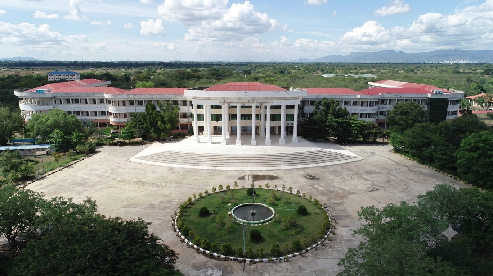
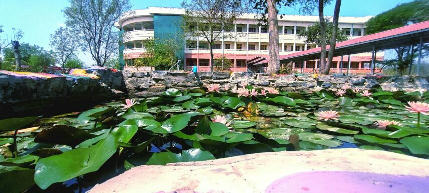
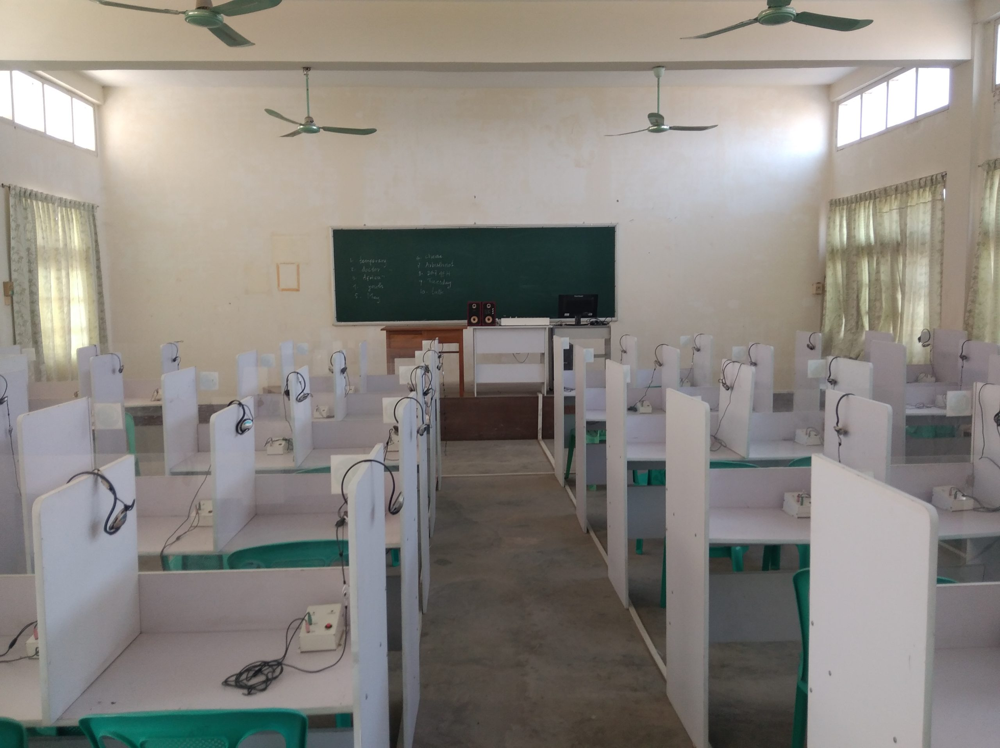
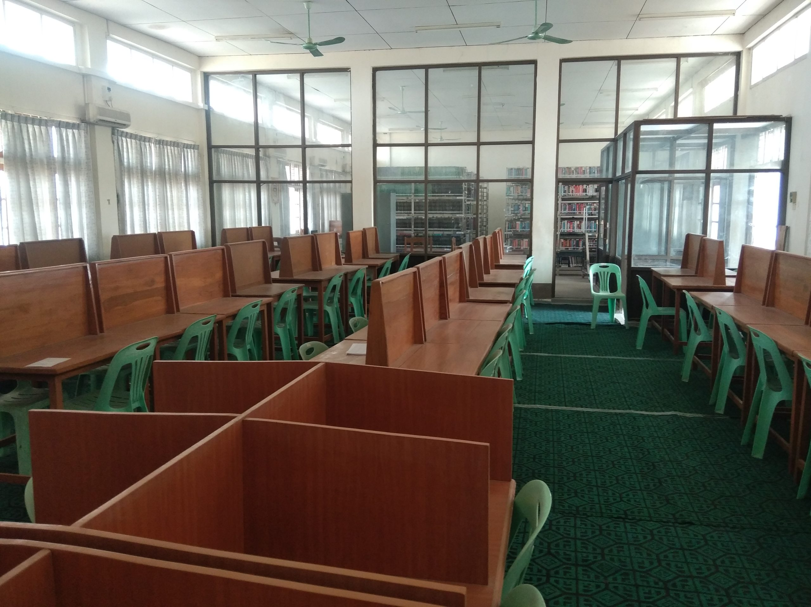

The University of Computer Studies (Mandalay)
Sintkaing Township, Mandalay Region
Excellence in Computer Science & Technology

About the University
The University of Computer Studies (Mandalay) is a Myanmar IT and computer science university offering bachelor's, master's, and doctoral degree programs in computer science and technology. The majority of its student body is from Upper Myanmar. It is located near Taoh Village in Sintkaing Township, Kyaukse District, Mandalay Region, approximately 2.6 miles from the Yangon-Mandalay Highway Road, spanning across 143.18 acres.
Address
Sintkaing Township, Mandalay Region, Myanmar.
(Located near Taoh Village, Kyaukse District, 2.6 miles from Yangon-Mandalay Highway Road)
Courses & Degrees
- B.C.Sc – Software Engineering, Knowledge Engineering, High Performance Computing, Business Information Systems
- B.C.Tech – Computer Communication & Networks, Embedded Systems
- Master Programs – M.C.Sc, M.A.Sc, M.I.Sc, M.C.Tech
- Doctoral Degree – Ph.D. in Information Technology
Admission Requirements
- Passed Matriculation Examination
- Minimum Aggregate Mark: 320 or higher
- Strong aptitude in Mathematics and Science
Facilities
- Moodle LMS: Online Learning Management System
2025 Minimum Admission Marks
382
(Subject to Annual Qualification Criteria)
Campus Gallery



Contact Information
Sintkaing Township, Mandalay Region, Myanmar
Visit Official Website